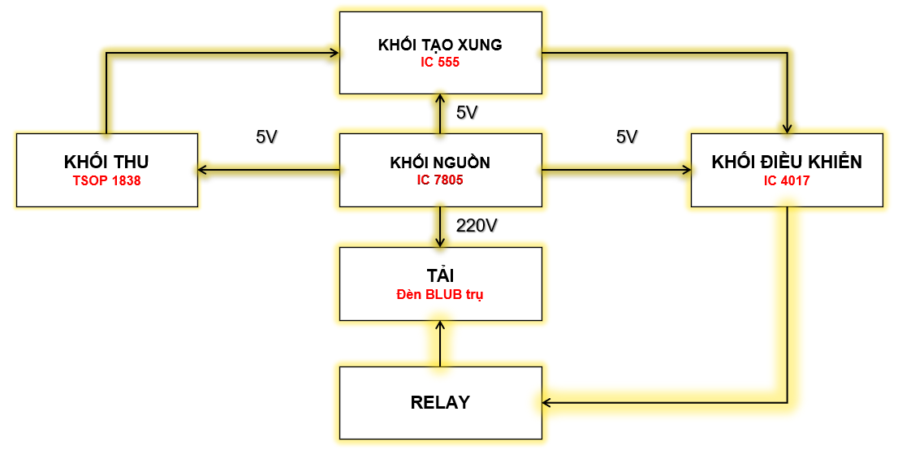

Đề tài: Điều khiển đèn bằng cảm biến
Thực hiện: Nhóm 3
GVHD: Mạc Đức Dũng
|
|
|
Giới thiệu thành viên nhóm 3
|
|
|
Ưu điểm - Lý do chọn đề tài
- Gọn gàng và tiện lợi:
- An toàn
- Có thể tái sử dụng
- Có thể điều khiển được từ xa
|
Tiến hành thực hiện
Sơ đồ khối
|
|

|
Sơ đồ nguyên lý các khối:
|
Khối nguồn
|
|
Khối thu |
Sử dụng con mắt thu 1838 để nhận tín hiệu từ remote và truyền tín hiệu ra từ chân out để đến chân 2 của IC 555
|
Khối tạo xung |
Khi nhận dược tín hiệu truyền đến của bộ thu đến chân 2 của IC 555 thì Ic sẽ tạo ra 1 xung vuông cấp cho chân 3 của IC 4017.
Biến trở nhằm tăng hay chậm tốc độ truyền xung của IC 555 cấp cho IC 4017.
|
Khối điều khiển |
IC 4017 hoạt động bởi xung kích cạnh lên từ IC555 cấp vào chân CLk(chân 14), chân 13 (chân E nối mass) để cho IC hoạt động,chân MR là chân RESET khi ta cấp cho ngõ ra Q0 là mức 1 thì các ngõ ra còn lại ở mức 0. Chân Mr nối ở chân Q4 để khống chế lượt đếm.
|
Khối tải |
Các chân Q ngõ ra của Ic 4017 đi đến chỗ BJT (NPN) để kích cho relay hoạt động và làm cho đèn sáng
|
Sơ đồ hoàn chỉnh |
|
|
Sơ đồ mạch in
|
Mạch in hệ thống
Mạch in nguồn
|
Vẽ mạch 3D
|
Mạch 3D hệ thống
Mạch 3D nguồn
|
Những hạn chế của hệ thống này:
- Chỉ có thể truyền qua đường thẳng
- Cảm biến quá nhạy
Phương hướng phát triển sau này
- Thêm chế độ hẹn giờ
- Kết hợp IOTs
|
Cảm ơn thầy và các bạn đă ghé thăm
|